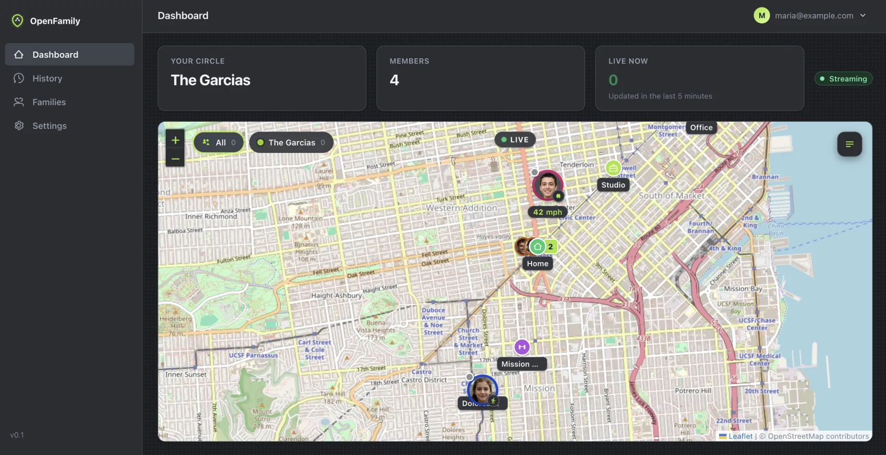
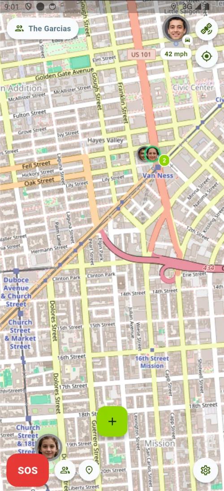
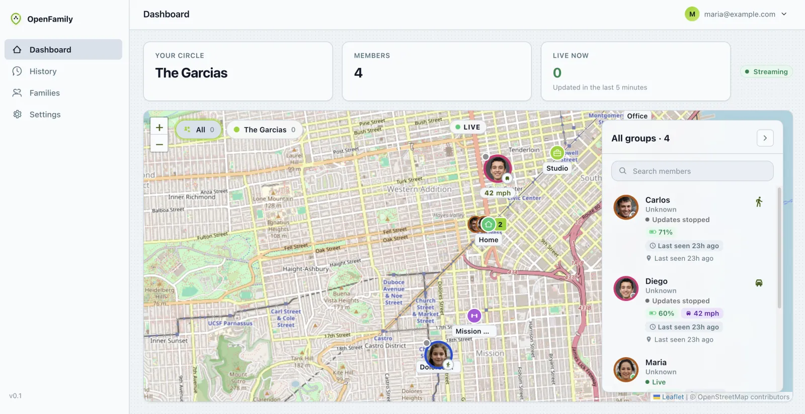
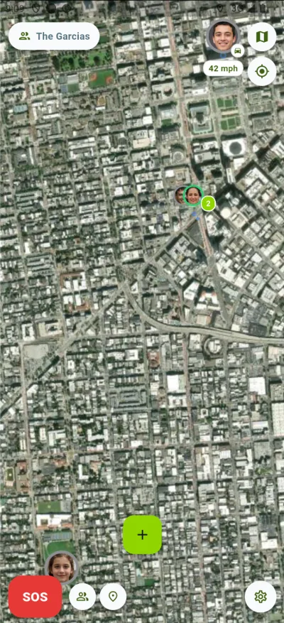
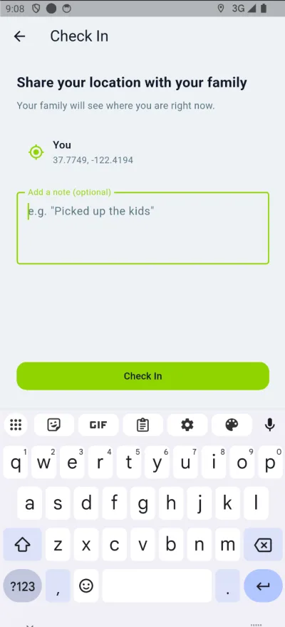
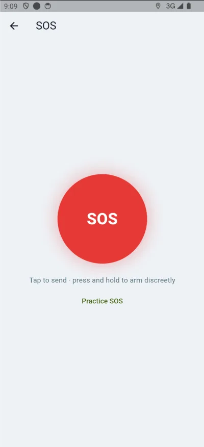
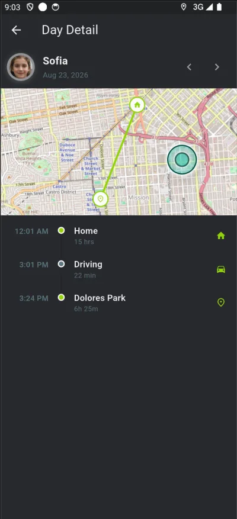
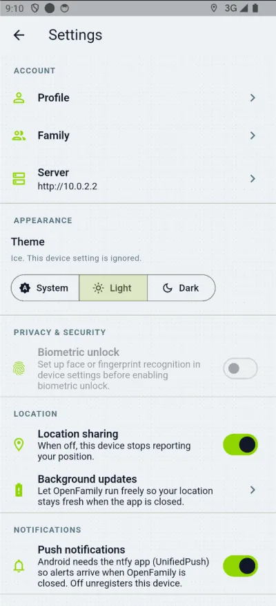
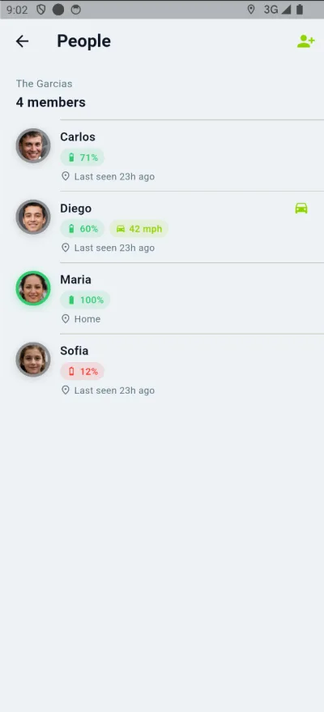
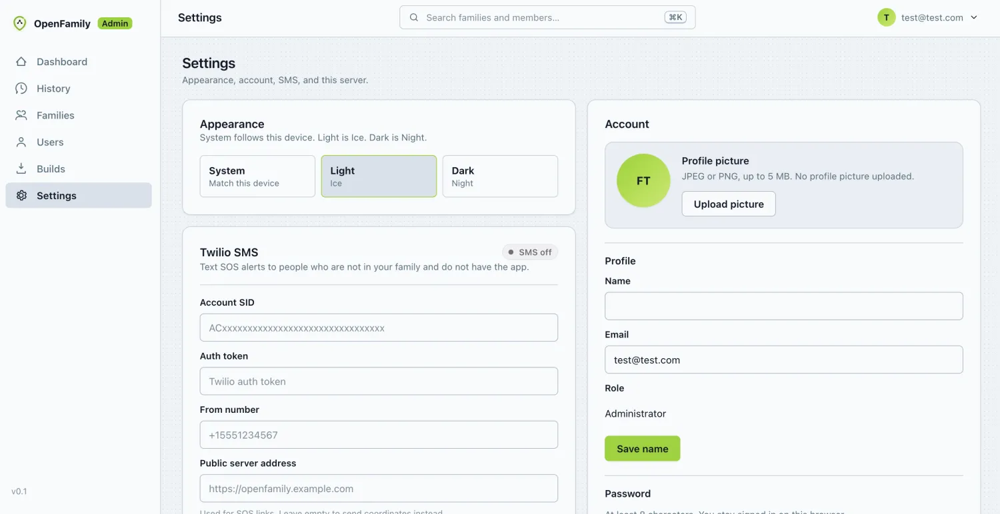

Your phonesAndroid + iOS
Self-hosted · Open source · Built for families
Know where your family is—privately.
Run the live map, safety alerts, places, and 90-day history on a server you choose. No vendor location cloud. No analytics SDK. No Google services required on Android.
- Your server
- No ads or tracking
- OpenStreetMap
- UnifiedPush
Private by architectureHistory lives on your server


Family map liveConnected to your home base
90 daysof location history
3 safety flowsSOS, Help, and Check In
1 generic APKfor every deployment
0 analyticsor crash-reporting SDKs
Privacy by architecture
Your family is not somebody else’s dataset.
OpenFamily has no company-operated location service to send your movements to. Your accounts, coordinates, saved places, and history live in PostgreSQL on the machine you control.
Read the full privacy detailsYour private path Operator controlled
Your OpenFamilyGo API + web panel
Your databasePostgreSQL + PostGIS
VPSSynology NASHome serverLAN
Your data store
Locations, places, family roles, safety alerts, and history live in your Postgres—not ours.
No behavior pipeline
No analytics SDK, crash reporter, advertising ID, or vendor location pipeline is built in.
Push without Google
Android notifications use UnifiedPush with ntfy. No Google account or Play Services required.
Maps on your terms
Use OpenStreetMap by default, choose another raster provider, or point every phone at your own tiles.
Made for real families
Everything you need to stay connected. Nothing that sells you out.
A focused family locator—live context when you need it, quiet privacy controls when you do not.
01 / Live map
One glance. Everyone you care about.
See your family on OpenStreetMap with photo avatars, battery, last-seen time, movement state, and live WebSocket updates.
- Street and satellite layers
- Driving and cycling status
- Smart clustering when people overlap
- Saved places with arrive and leave alerts


Live updates
02 / Safety
Help, without the guesswork.
Send an SOS, discreetly arm a ten-second countdown, check in with a note, or ask only your family for non-emergency help.
SOSHelp AlertCheck In


03 / History
A day, made clear.
Review map trails, named-place stays, stops, and in-transit segments. Detail expires after 90 days.

04 / Control
Sharing has an off switch.
Pause location reporting per device, choose the app theme, protect access with biometrics, and tune background updates.

05 / Family
Built for a household, not a fleet.
Invite people with a code and use admin, member, or child roles to keep family access simple.

06 / Web admin
The operator view is included.
Manage accounts and families, configure optional SMS, generate invites, download the Android APK, and see the live map from the same server.

Run it somewhere you trust
Your server is the service.
Deploy with Docker Compose on a VPS, Synology NAS, home server, or LAN machine. One stack brings the API, TLS, database, web panel, and Android push together.
openfamily / setup
$ git clone https://github.com/wheresfrank/whereabouts.git openfamily
$ cd openfamily
$ cp .env.example .env
# choose strong secrets and your domain
$ docker compose up -d --build
✓ Caddy HTTPS edge
✓ Go API REST + WebSocket
✓ Postgres PostGIS + TimescaleDB
✓ ntfy Android UnifiedPushDocker ComposeGoFlutterPostgreSQLPostGISTimescaleDBCaddyntfy
Clear about the edges
Private means knowing exactly what can leave.
We would rather give operators an accurate boundary than a vague promise. OpenFamily keeps the location pipeline under your control and documents the few optional or platform-required services around it.
The default hosts see the viewport.
Use your own raster tile server when you do not want public OSM or Esri endpoints to see the area being viewed.
Apple requires APNs.
Push payloads contain no coordinates. The app fetches the real alert content from your server over TLS.
Twilio is off until you choose it.
In-app push and WebSocket alerts work without SMS. If enabled, Twilio sees the destination and your short-lived share URL.
Good questions
Before you bring the family.
OpenFamily is made for households with one person comfortable running a small Docker stack.
Do I need to build a different app for my server?
No. The generic Android APK asks for your server address on first launch, then stores that origin on the device.
Can Android work without Google Play Services?
Yes. OpenFamily uses UnifiedPush through ntfy for Android notifications and does not require a Google account.
Who can see a person’s location?
Members of the same family can see the family map. A configured platform administrator can also access locations through the web panel.
Is this a fleet or public tracking tool?
No. OpenFamily is deliberately designed for a handful of people who share a home—not vehicles, assets, or public location broadcasting.
What happens to old location data?
Detailed location history is retained for 90 days. The last known point remains so inactive family members still appear on the map.
Open source and ready to run
Keep your family close.
Keep your family close.
Keep their location yours.
Start on a laptop. Move to a NAS or VPS when the family is ready.